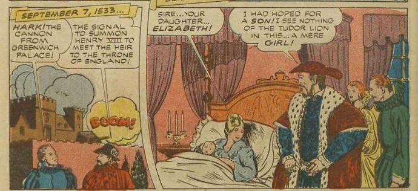

How it works: read the comic pages → answer the question about today's big idea → see what the comic got right and wrong → write 1–2 sentences. Done = all parts green, then turn in at the bottom.
Word help (tap to open)
- Protestant = Christians who broke away from the pope's church
- Catholic = the church led by the pope in Rome
- Heresy = beliefs that go against official church teaching
- Inquisition = church courts that put people on trial for heresy
- Armada = a huge fleet of warships
- 1943 comic = made for American kids in the 1940s, during World War II. It uses some old words and shows one point of view.

Click the page to make it bigger.
Turn in your work
Your work saves on this device, so you can come back later. Your teacher sees it after you turn it in.
Comic: Real Life Comics no. 12 (1943), Nedor Publishing, a true-history comic of the 1940s. Public domain. Page images from Comic Book Plus (comicbookplus.com). Cropped to today's reading.